DOCUMENTAZIONE
ABSTRACT
Questo sito nasce con l'intento di valorizzare l'ambito musicale del Circolo APS Enigma, si rivolge dunque sia a tutti coloro che lo frequentano sia a coloro che ancora non lo conoscono, ma che s'interessano di iniziative musicali attive sul territorio di Parma e provincia. Il punto forte di questo sito è l'equilibrio tra musica e divertimento: essendo il circolo un ambiente formato esclusivamente da giovani, è fondamentale che la musica sia un mezzo come un altro per educare e crescere divertendosi.
PROJECT MANAGEMENT PLAN
1. BENCHMARKING
1.1. Obiettivo
Il sito web si prefigge l'obiettivo di avvicinare i giovani alla musica live cantata e suonata. Infatti, con l'attività di karaoke e con il futuro music festival, talenti e artisti poco conosciuti avranno modo di emergere e farsi conoscere.
1.2. Target utente
Il sito si rivolge a tutti i giovani dai 14 ai 25 anni che risiedono nel territorio di Parma e dintorni e che sono interessati all'ambito musicale.
1.3. Competitors
Il tema degli eventi musicali è molto comune nel territorio di Parma e provincia, dunque, analizzerò in questo punto tre competitors che ho deciso di prendere in esame. Tra questi ho scelto di inserire anche un
evento che, a causa dell'emergenza Covid, attualmente non esiste più, ma comunque ho scelto di prenderlo in considerazione in quanto sia un ottimo competitor da cui prendere ispirazione (essendo stato cancellato anche il sito web, di seguito ho inserito il link della pagina Facebook).
- Parma Cittàdella Musica: questo progetto è promosso dal Comune di Parma con l'obiettivo di costruire e consegnare alla città eventi di rilievo
culturale e musicale. Il punto forte di questo sito è sicurmante la sua semplicità, ma di contro ha che manca di interattività: l'utente che vi entra può informarsi sui concerti live
presenti nel Comune di Parma, ma non può proporsi lui stesso per esibirsi. Il sito esclude dunque tutti gli artisti emergenti non ancora conosciuti.
- Parma Music Park: è nata come un'arena spettacoli a Parma che ospitava per tutta estate grandi festival e concerti
per la gioia di tutti gli amanti della musica live. Inoltre, dava la possibilità di esibirsi anche ad artisti musicali emergenti o non conosciuti.
Purtroppo al termine dell'emergenza Covid-19 quest'attività non è riuscita a rialzarsi. Purtroppo non si è in grado di valutare i contro del sito
in quanto, a seguito del fallimento, è stato cancellato.
- Rete ARCI Live: è la Rete dei circoli ARCI che fanno musica dal vivo. ReAL porta avanti un vero e proprio lavoro di scouting verso le giovani band che
nascono e transitano all'interno dei circoli aderenti. Il contro del sito è che per poter usufruire dei vantaggi e delle opportunità offerte dalla rete dei circoli che fanno musica dal vivo, è necessario
e fondamentale essere membro di un Circolo ARCI (il quale deve aver aderito al programma ARCI Real). Inoltre, si limita a indirizzare gli utenti al sito web del circolo aderente più vicino, senza offrire dunque un servizio diretto.
CONTRO
Questo sito manca di interattività: l'utente che vi entra può informarsi sui concerti live
presenti nel Comune di Parma, ma non può proporsi lui stesso per esibirsi. Il sito esclude dunque tutti gli
artisti emergenti non ancora conosciuti.
CONTRO
Non esiste più un sito web del luogo.
CONTRO
Per poter usufruire dei vantaggi e delle opportunità offerte dalla rete dei circoli che fanno musica dal vivo, è necessario
e fondamentale essere membro di un Circolo ARCI (il quale deve aver aderito al programma ARCI Real). Inoltre, si limita a
indirizzare gli utenti al sito web del circolo aderente più vicino, senza offrire dunque un servizio diretto.
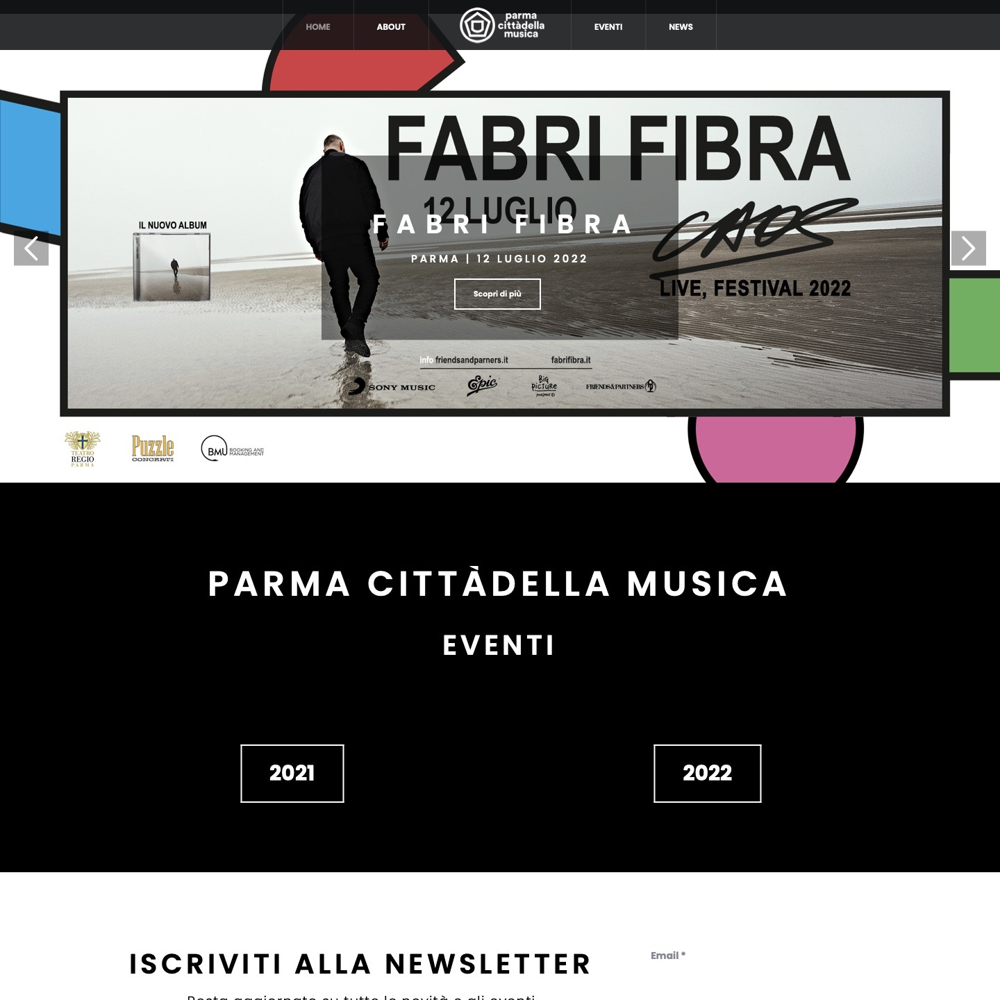
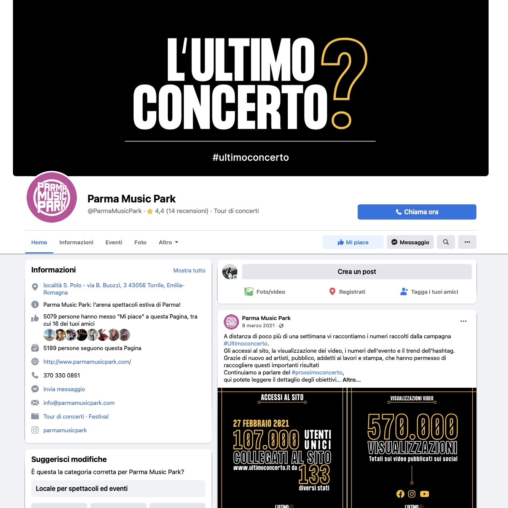
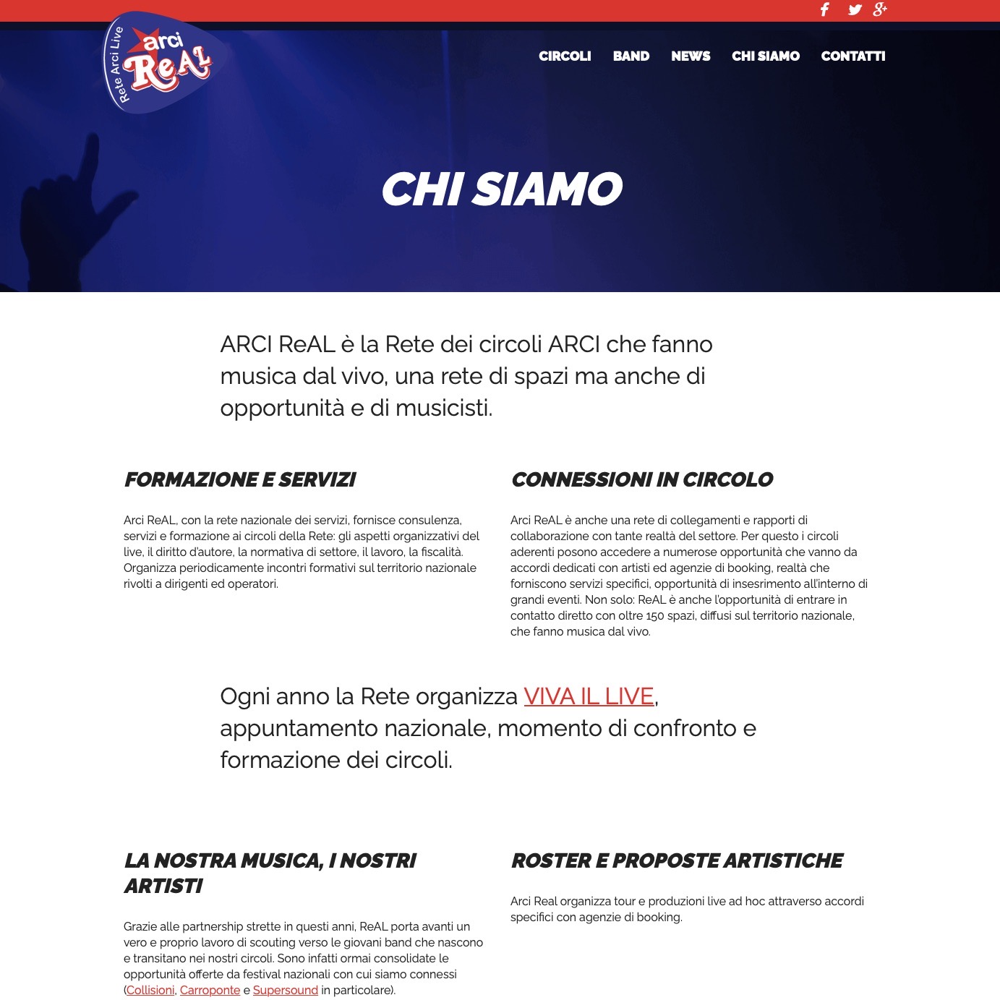
PARMA CITTÀDELLA MUSICA
Questo progetto è promosso dal Comune di Parma con l'obiettivo di costruire e consegnare alla città eventi di rilievo
culturale e musicale.
PARMA MUSIC PARK
È nata come un'arena spettacoli a Parma che ospitava per tutta estate grandi festival e concerti
per la gioia di tutti gli amanti della musica live. Inoltre, dava la possibilità di esibirsi anche ad artisti musicali emergenti o non conosciuti.
Purtroppo al termine dell'emergenza Covid-19 quest'attività non è riuscita a rialzarsi.
ARCI REAL
È la Rete dei circoli ARCI che fanno musica dal vivo. ReAL porta avanti un vero e proprio lavoro di scouting verso le giovani band che
nascono e transitano all'interno dei circoli aderenti.
2. STRUTTURA E LAYOUT
2.1. Architettura del sito
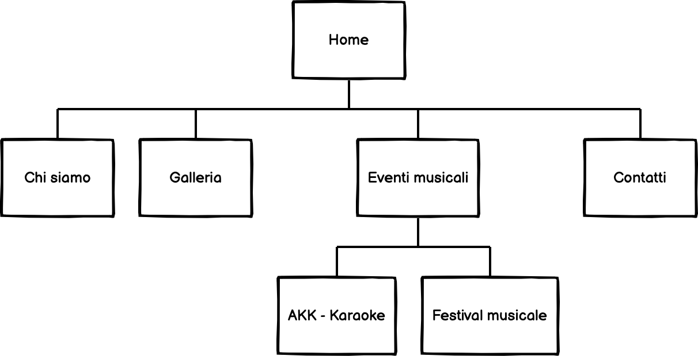
2.2. Wireframe
3 / 9

GALLERIA
5 / 9
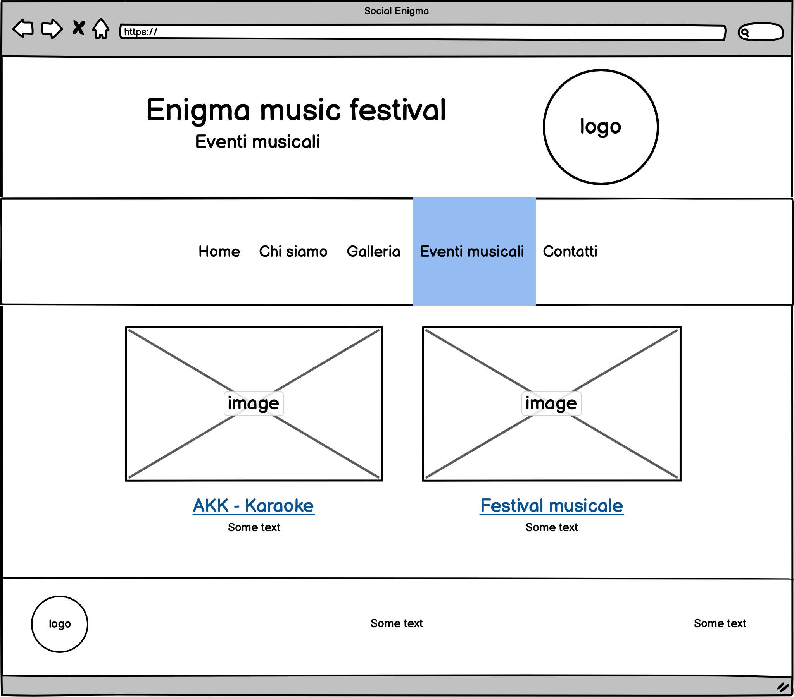
EVENTI MUSICALI
8 / 9
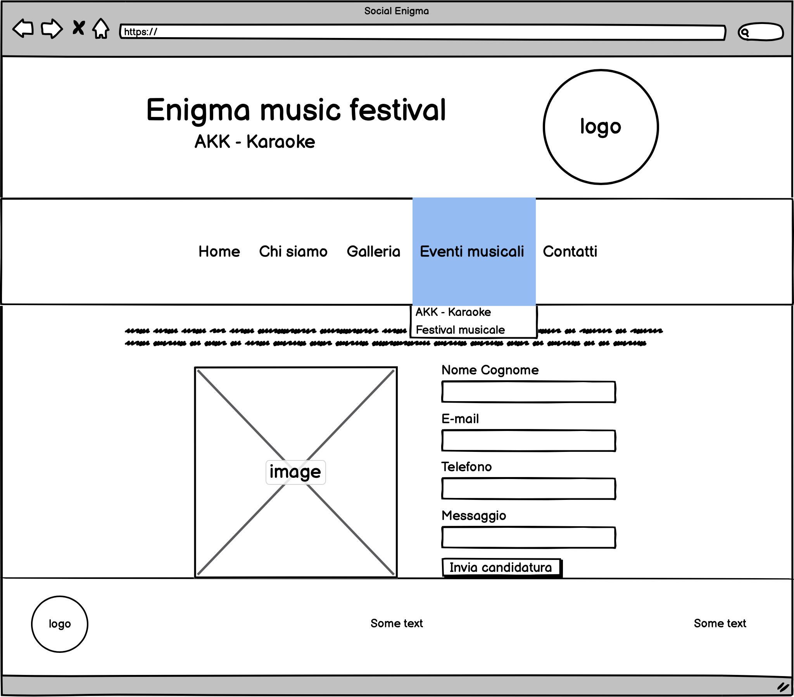
FESTIVAL MUSICALE
❮
❯
6 / 11
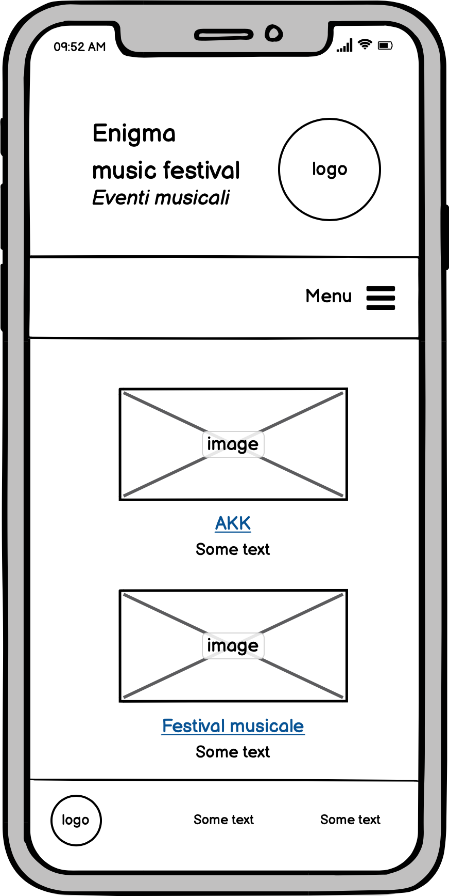
EVENTI MUSICALI
9 / 11
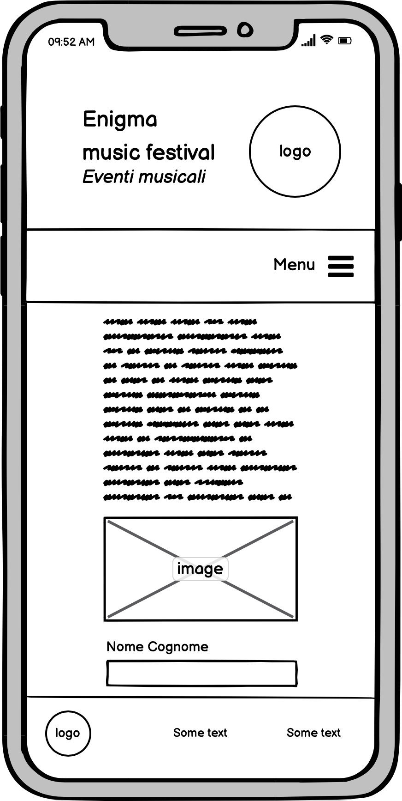
FESTIVAL MUSICALE
10 / 11
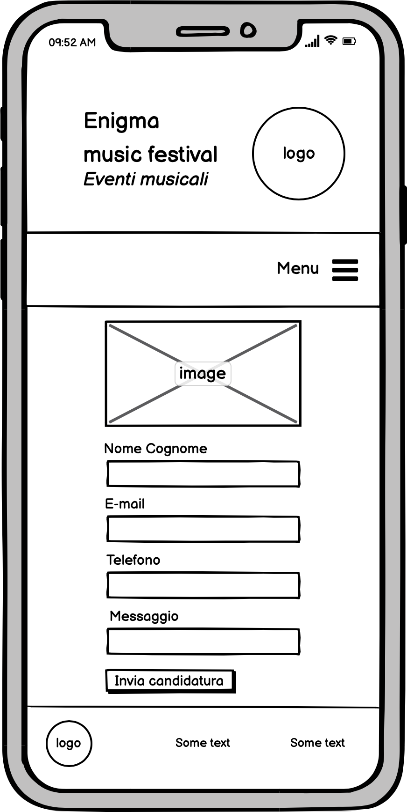
FESTIVAL MUSICALE
❮
❯
2.3. Look and feel
Il sito ha una struttura logica precisa ed è dunque di facile comprensione per chiunque lo visiti. Innanzitutto per creare la home mi sono ispirata al sito dell'Istituto Universitario Salesiano di Venezia
, in quanto risulti di forte impatto visivo soprattutto per quanto riguarda il menù di navigazione presente nella homepage.
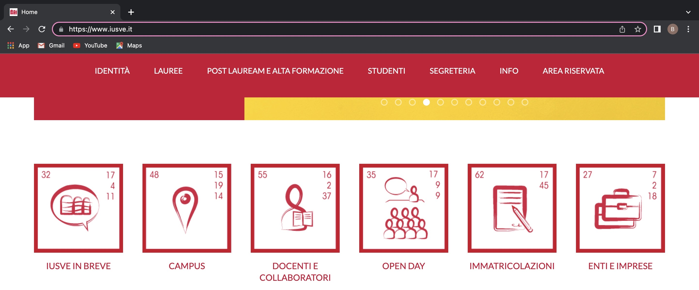
Homepage del sito IUSVE
Ho deciso di utilizzare esclusivamente immagini in bianco e nero al fine di lasciare libera interpretazione per quanto riguarda l'atmosfera del luogo a chiunque si soffermi a guardarle. Inoltre, non volevo che i colori delle immagini rischiassero di andare a complicare
una palette di colori prevalentemente minimal (fatta eccezione per le locandine degli eventi, che per ovvie ragioni devono mantenere i loro toni originali).
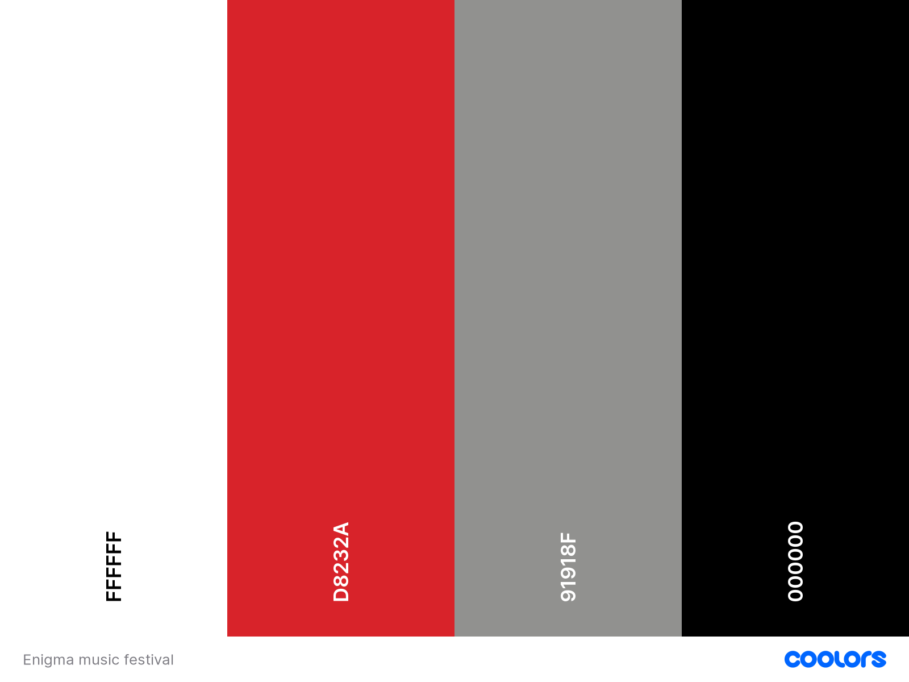
Palette di colori utilizzata
La scelta della palette dei colori è stata dettata dal logo del circolo, in cui risalta la tonalità di rosso al fine di richiamare l'Associazione Ricreativa e Culturale Italiana (ARCI).
Ho deciso poi di affiancare a questo colore una scala di grigi per mantenere uno stile semplice, giovane ed energico. A questo punto trovo importante specificare che ho reso il sito responsive, cambiando addirittura qualche caratteristica per quanto riguarda
la visione da smartphone, questa scelta è stata dettata dal fatto che i giovani tendono ad utilizzare prevalentemente dispositivi mobili se si tratta di visitare un sito web.
3. LINGUAGGI E STRUMENTI
3.1. Linguaggi
3.2. Strumenti
- Utilizzo di Coolors per creare una palette di colori coerente col logo del circolo.
- Utilizzo di Balsamiq per creare il grafico ad albero del sito e il wireframe sia per computer sia per smartphone.
- Utilizzo di Font Awesome per varie icone presenti nel sito.
- Utilizzo di Visual Studio Code per le varie pagine HTML, CSS e JavaScript.
- Utilizzo di GitHub per la pubblicazione del sito.
- Utilizzo di Google Fonts per il fonts utilizzato nel sito.
- Utilizzo di Google Analytics per monitorare l'andamento del sito.
- utilizzo di Envato Tuts per approfondire il linguaggio Javascript.
COMMUNICATION STRATEGY
1. BACKGROUND
Le politiche di comunicazione web attuate da "Parma Cittàdella Musica" e dal "Parma Music Park"
perseguono principalmente l'obiettivo di attirare pubblico per trarne un effettivo guadagno curandosi meno degli artisti stessi. La politica attuata invece da "ARCI Real" mira alla scoperta e alla crescita di futuri artisti,
dando loro la possibilità di affacciarsi nel grande panorama della musica italiana, i passaggi da attuare per poter far parte del progetto o per poter esibirsi sono però molto lunghi
e, nonostante il servizio si rivolga a tutta la nazione, non è presente in tutto il territorio italiano.
Il punto forte di questo sito si trova nelle due iniziative proposte, esse infatti sono pensate per essere adatte a tutti: artisti poco conosciuti o emergenti hanno la possibilità di esibirsi durante il festival, mentre, per i più stonati o timidi, si cerca di dimostrare come davanti ad uno spritz e a qualcosa da mangiare
chiunque possa dilettarsi nell'attività del karaoke. Inoltre queste iniziative non sono a scopo di lucro, sono invece volte all'educazione, alla crescita e al divertimento.
2. OBIETTIVI COMUNICATIVI
L'obiettivo che sta alla base del mio sito è quello di avvicinare i giovani alla musica non come pubblico, ma come protagonisti. La musica, infatti, è un forte mezzo che permette di unire, crescere e imparare, incarnando tutti i valori
perseguiti e mantenuti all'interno del Circolo Enigma.
3. TARGET
Il sito si rivolge a tutti i giovani dai 14 ai 25 anni che risiedono nel territorio di Parma e dintorni, il Circolo infatti cerca da sempre di mantenere vivo il territorio con progetti e iniziative che vadano a
valorizzare tradizioni e pratiche tipiche di Parma. Una seconda tipologia di target vede interessati tutti gli appassionati di musica che abbiano voglia di scoprire artisti e nuovi talenti del posto, o anche solo di tenersi aggiornati sugli eventi musicali attivi nel territorio.
4. PROMOZIONE
Ho scelto di promuovere il sito principalmente usando il metodo più efficace e più vecchio del mondo, ovvero il passaparola sia verbale che tramite Whatsapp: in poco tempo ho raggiunto
ottimi feedback e ottimi risultati in termini di visualizzazioni e interessamento.
Successivamente verrà promosso anche dai canali ufficiali del Circolo Enigma (Instagram e Facebook).
5. VALUTAZIONE DEI RISULTATI
Ho deciso di pormi due obiettivi che potessero dimostrare l'effettiva attravità e interattività del mio sito e, considerando i dati ottenuti in soli tre giorni, posso ritenermi soddisfatta.
- Raggiungere più di 60 visite al sito da parte di utenti unici:
2 / 2

UTENTI PER PAESE
❮
❯
- Ricevere almeno 3 candidature per il Music Festival: